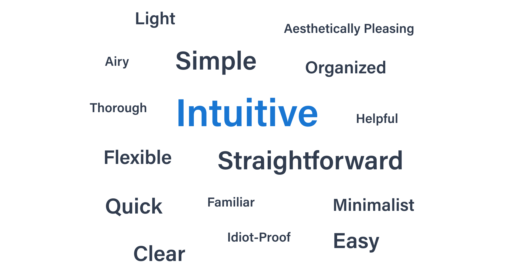

Research Phase: Competitor Research
We looked at various SaaS portfolio managers and were inspired by Quicken, Personal Capital, Yahoo Finance, and more.


Data visualization and modeling for fund managers and investors in a Vitech SaaS application.
An overview of the application dashboard screen.
Vitech's Fund Analytics Manager enables fund managers and investors to build relevant data models to track their investments over time.
Product Design, UX, and Data Visualization.
September - November 2021.
Product Managers: Sharon Ironside, Christa Punturieri, and Shannon Carroll. UX Team: Emm Pakdee (Director of UX), Gautam Krishnan (Sr. UX Designer). Engineering (Framework) Team.
Figma Design, FigJam, InVision, Balsamiq Mockups, and React.js.
Ideation, Research, Prototyping, Visual Design, and User Testing.
Vitech broadly serves three industrial verticals - Insurance, Investments, and Retirement. Fund Analytics Manager is built for the investments vertical giving fund managers the power to manage the full life cycle of the fund, from fund creation to portfolio management, to investor allocations and communications. Fund capital transactions, fees and expenses, as well as investment gain/loss can be allocated through to build out each investor’s capital account, which allows for immediate access to an investor’s position.
Vitech's next-generation React platform is a robust framework that serves as a base for all our new self-service apps. We use React Material under the hood that is modified to serve Vitech's Design System components.
A rudimentary version of what we set out to build existed in our Core Admin platform for many years. We spoke to a few customers and SMEs regarding this and found a lot of scope for improvement while building a new application. They have, at times, shown to be leading indicators for market needs. To note specific examples:
We looked at various SaaS portfolio managers and were inspired by Quicken, Personal Capital, Yahoo Finance, and more.
We will consider the product to be a success when:
After interviewing our SMEs and client fund managers, we were able to further define the requirements and create epics to work on. We broke it down as follows:
After user interviews, sketching user flows, and storyboarding, we were able to further refine the scope of the product.
"Very often design is the most immediate way of defining what products become in people's minds."
- Jony Ive
We were able to validate a lot of our hypotheses and understood where we fell short.
Our test participants used the following adjectives to describe their experience:
Traffic Light Report Summary of Tasks Performed by Test Participants via UX Design Concept.
N/A.
4/4 participants were able to easily access the dashboard, navigate to and between the models they created.
The drawer dropdown menu that allows switching between models should also be present on the home page.
{kind=link}
{kind=link}
{kind=link}
{kind=link}
{kind=link}
{kind=link}
{kind=link}
{kind=link}
{kind=link}
{kind=link}